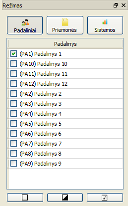

Naudojantis šia sąsaja, galima:
- Pasirinkti rezultatų rodymo režimą (Padaliniai arba Sistemos)
- Filtruoti dominančius padalinius/sistemas
- Pasirinkti dominančias paramos priemones

Rėžimų pasirinkimo sąsajoje nuspaudus mygtuką „Priemonės“, galima pasirinkti, į kurias priemones bus atsižvelgiama atliekant analizę. Išjungus pasirinkimo būseną „Priemonės“, sugrąžinamas buvęs „Padaliniai“ arba „Sistemos“ rodymo rėžimas.
Pasirinkimų redagavimo mygtukai
| Elementas | Aprašymas |
|---|---|
| Atžymėti visus pasirinkimus | |
| Visus pasirinkimus pakeisti priešingais | |
| Pažymėti visus pasirinkimus |
Pastaba: netyčia paslėpus šią sąsają, ją galima atslėpti per meniu Rodyti -> Režimas.